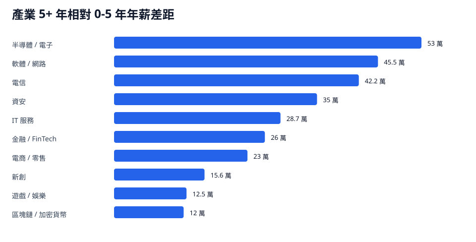
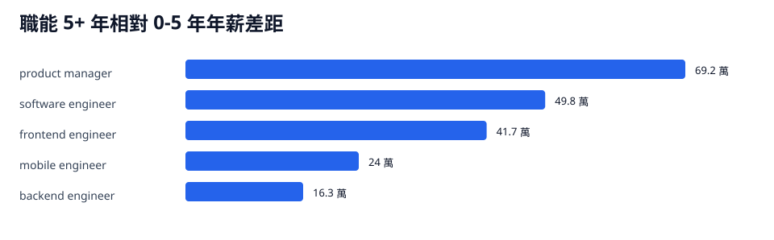

這頁把年資拆進產業與職能，比較 0-5 年與 5+ 年的年薪中位數差距。差距排行納入兩邊各至少 5 筆的群組。
分析見解
- 產業差距最大的是半導體 / 電子：0-5 年年薪中位數 91 萬、5+ 年 144 萬，差距 53 萬。
- 軟體 / 網路從 91 萬提升到 136.5 萬，差距 45.5 萬；資深階段的議價能力集中在產品型軟體與平台型公司。
- 職能差距最大的是 product manager，從 70 萬提升到 139.2 萬；software engineer 從 78.2 萬提升到 128 萬，是工程職涯最穩定的成長主軸。

圖表納入 0-5 年與 5+ 年兩側各至少 5 筆的產業。

圖表納入 0-5 年與 5+ 年兩側各至少 5 筆的職能。
產業：0-5 年 vs 5+ 年
| 產業 | 0-5 年樣本 | 0-5 年中位數 | 5+ 年樣本 | 5+ 年中位數 | 差距 | 倍數 |
|---|---|---|---|---|---|---|
| 半導體 / 電子 | 48 | 91 | 23 | 144 | 53 | 1.58 |
| 軟體 / 網路 | 60 | 91 | 47 | 136.5 | 45.5 | 1.5 |
| 電信 | 6 | 79.3 | 8 | 121.6 | 42.2 | 1.53 |
| 資安 | 23 | 98 | 11 | 133 | 35 | 1.36 |
| IT 服務 | 88 | 61.6 | 40 | 90.3 | 28.7 | 1.47 |
| 金融 / FinTech | 27 | 72 | 12 | 98 | 26 | 1.36 |
| 電商 / 零售 | 10 | 85 | 5 | 108 | 23 | 1.27 |
| 新創 | 14 | 85.9 | 8 | 101.5 | 15.6 | 1.18 |
| 遊戲 / 娛樂 | 10 | 85.5 | 9 | 98 | 12.5 | 1.15 |
| 區塊鏈 / 加密貨幣 | 5 | 156 | 5 | 168 | 12 | 1.08 |
職能：0-5 年 vs 5+ 年
| 職能 | 0-5 年樣本 | 0-5 年中位數 | 5+ 年樣本 | 5+ 年中位數 | 差距 | 倍數 |
|---|---|---|---|---|---|---|
| product manager | 12 | 70 | 6 | 139.2 | 69.2 | 1.99 |
| software engineer | 176 | 78.2 | 117 | 128 | 49.8 | 1.64 |
| frontend engineer | 37 | 72.7 | 5 | 114.4 | 41.7 | 1.57 |
| mobile engineer | 5 | 72 | 5 | 96 | 24 | 1.33 |
| backend engineer | 29 | 79.8 | 21 | 96.1 | 16.3 | 1.2 |